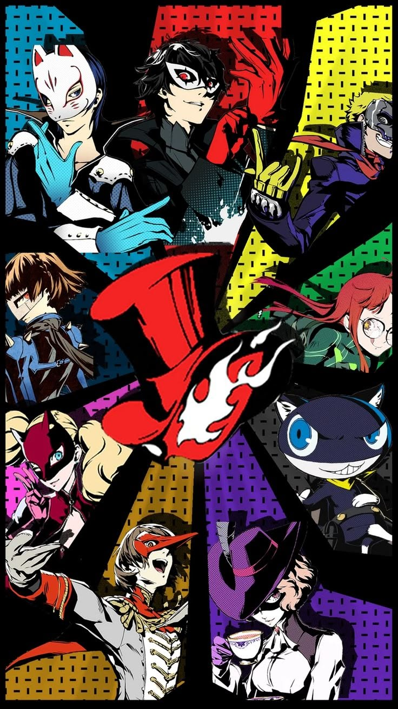
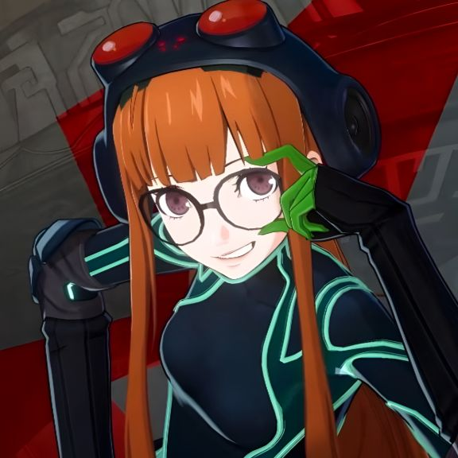
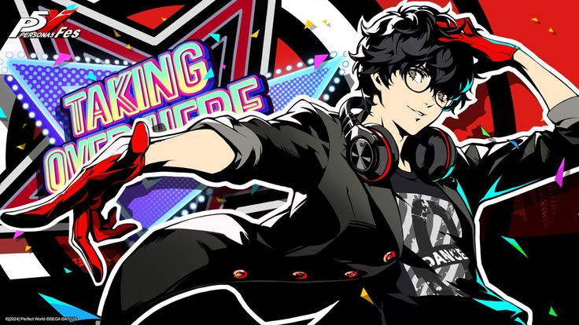

Donc tous les personnages principaux sont: Morgana, Ryuji Sakamoto, Ann Takamaki, Yusuke Kitagawa, Makoto Niijima, Futaba Sakura, Haru Okumura, Goro Akechi, and Sumire Yoshizawa. Key figures also include Igor, Sojiro Sakura, Chihaya Mifune, Munehisa Iwai, Tae Takemi, Sadayo Kawakami, Ichiko Ohya, Shinya Oda, Hifumi Togo, Yuuki Mishima, Toranosuke Yoshida, Caroline & Justine, Sae Niijima, and Takuto Maruki
Mais le personnage que vous jouerez aura le nom que vous lui donnerez.
Dans les palais ( ce que vous decouvrirez dans la troisième page), vous ne pouvez jouer que certains personnages, il faut qu'ils soient inclus dans le groupe que vous allez également créer. Vous pourrez également seulement jouer 4 personnage lors d'un combat, et vous aurez donc le choix entre 3 choix car votre personnage principal sera toujours là. Les possibilitées sont donc: Ryuji, Morgana, Ann, Haru, Makoto, Tae, et Yoshida. Ils n'apparaîteront pas tous au début, vous devez avancer dans votre progression pour pouvoir les jouer. Et il y à également Futaba, qui elle vous aidera en soutiens moral et physique lors des combats mais vous ne poure pas la jouer.

Futaba arrive vers le milieu du jeu et elle est très intéréssante car elle à un palais à elle, elle est connectée au personnage principal et à un autre personnage très important dans l'histoire. Son caractère est très enfantin pour son âge mais sa situation et sa vie l'explique. Elle à également un développement très très émouvant.

Je ne vais pas parler de tous les personnage comme il y en à vraiment beaucoup, mais le personnage principal mérite quand même d'être abordé.
Joker c'est nous, on le contrôle, on décide de qui il se lie d'amité, ou même d'amour, il peut être une bonne ou mauvaise personne, c'est à nous de décider. Néanmoins il à une histoire derrière, il à eut un passé impactant la raison d'où il se trouve et de pourquoi il va se retrouver dans un sorte de multivers.À vous de le découvrir.